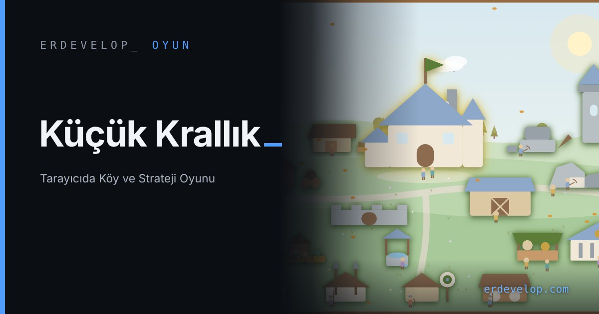
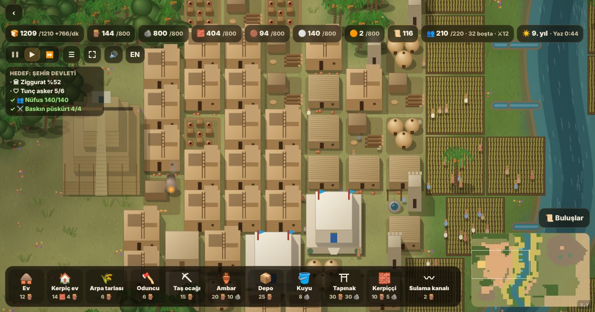
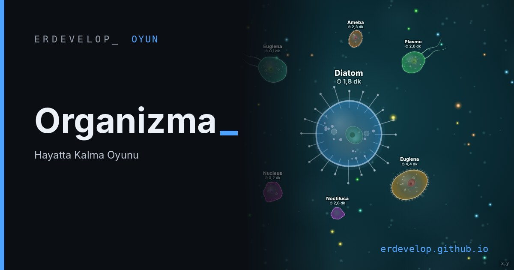
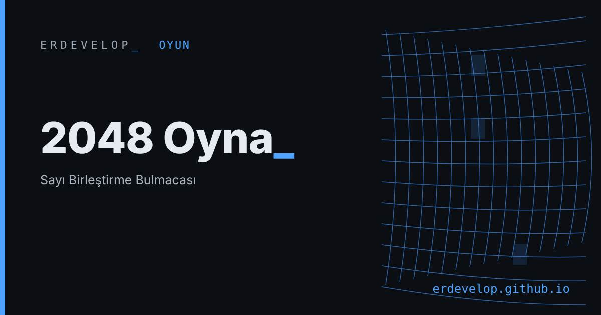
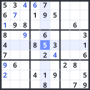
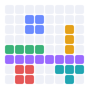
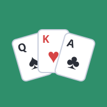
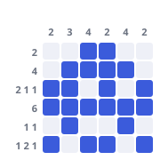

- Ana sayfa
- Oyunlar ve eğlence
Oyunlar ve eğlence
İndirmeden oynanan ücretsiz oyunlar: Küçük Krallık, Krallık Kartları, Organizma serisi, Kozmos, Derin Mavi, bilgi yarışması, sudoku ve daha fazlası. Telefonda da çalışır.









Günlük Kelime
Günün 5 harfli kelimesini 6 denemede bul; her tahminden sonra renkler ve kısa bir açıklama yol gösterir. Türkçe, İngilizce, Fransızca, Almanca.

Sudoku
Günün üç bulmacası, 60 bölümlük yolculuk ve beş zorlukta serbest oyun; notlar, açıklamalı ipuçları, dört tahta teması.
yeni
Blok Bulmaca
Parçaları 8×8 tahtaya sürükle, satır ve sütunları doldurup sil. Klasik mod ve günün oyunu.
yeni
Solitaire
Klasik Klondike pasyansı; her dağıtım çözülebilir, sınırsız geri al, ipucu ve günün dağıtımı.
yeniMayın Tarlası
İlk dokunuş güvenli, tahtalar tahmin gerektirmez; bayrak modu, mantıklı ipucu, günün tahtası.
yeni2048
Kaydır, aynı sayıları birleştir, 2048’e ulaş. Üç geri alma hakkı.
yeni
Nonogram
Kare karalamaca: sayılara bakarak gizli deseni boya. Dört boy ve günün bulmacası.
yeniMikro Dünya Laboratuvarı
Bir damla suya alg, bakteri, terliksi hayvan, Didinium ve virüs koy; ışığı, besini ve sıcaklığı ayarla. Gause'un av–avcı deneyini kendin tekrarla.
yeniMikro Dünya Quiz
Mikroskobik canlılar hakkında rastgele 10 soru, her cevaptan sonra açıklama. Sınıf koduyla bütün sınıf aynı soruları çözer.
yeniMeteor War Endless
Göktaşlarını ve plazma dalgalarını vur, yakıtını topla.
Numbermatic
Topu sürükle, işlemi kur, hedef sayıyı süre bitmeden bul.
Bilgi Yarışması
24 kategoride binlerce soru; zorluk ve süre seç, seri yaparak puan topla.
Uzay
NASA’nın günün astronomi fotoğrafı ve Uluslararası Uzay İstasyonu’nun canlı konumu.
Aramana uyan sonuç yok. Tüm araçlarda ara
Oyunlar ve eğlence hakkında
Tarayıcıda açılıp hemen oynanan oyunlar: sakin bir köy stratejisi, kart savaşı, tek hücreden şehre uzanan Organizma serisi, uzayda keşif, okyanusta bir balığı büyütme, günlük bulmacalar ve bilgi yarışması. İlerlemen bu tarayıcıda saklanır; üyelik gerekmez.
Onlarca kısa mini oyun için Oyun Bahçesi’ne de göz at.
About games & fun
Games that open in the browser and play straight away: a calm village strategy, a card battle, the Organism series from a single cell to a city, space exploration, raising a fish in the ocean, daily puzzles and a trivia quiz. Progress is saved in this browser; no account needed.
For dozens of short mini games, have a look at the Game Garden too.